Nacrtaj promjenu. Istražite je zajedno.
Oblikuj zahvat na stvarnom zemljištu, pregledaj rezultat u 2D-u i 3D-u, usporedi varijante i podijeli dizajn ili cijeli plan. Prati korake u nastavku ili pogledaj video.
Otvori kartu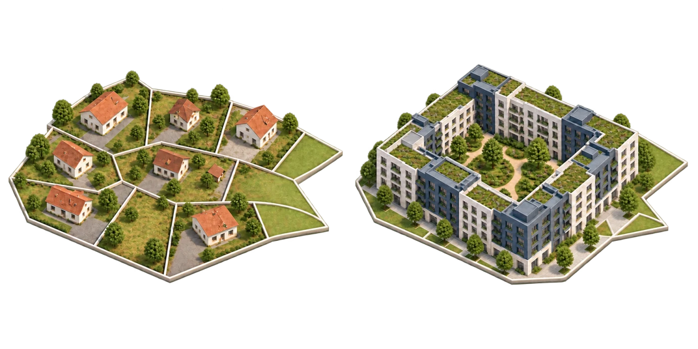
Izradi prvi park
Odaberi zemljište
Odaberi grad i prijeđi na 2D kartu. Klikni česticu.
Izradi park
Otvori Radnje i odaberi Park. Ako se ponudi izbor, odaberi Upotrijebi ovu česticu. Park se sprema lokalno i primjenjuje na kartu.
Otvori dizajn
Ako pregled na mobitelu prekriva donju traku, odaberi Zatvori pregled. Otvori Popisi → Dizajni i odaberi park za pregled. Ako ga nije moguće primijeniti, aplikacija objašnjava zašto i zadržava ga na popisu.
Drugi načini početka
Pretragom karte pronađi mjesto ili česticu. Za više čestica odaberi Ručno, klikni čestice, pregledaj Odabrane čestice i odaberi Završi odabir. Detektiraj blok odabire okolni blok. Ako alat ponudi Odaberi cijeli blok, pregledaj odabir i ponovno odaberi alat. Odustani ili Escape vraćaju te natrag.
Klikni otvoreno zemljište i odaberi Nacrtaj česticu. Klikni kutove i pritisni Enter ili klikni prvi kut za dovršetak. Možeš koristiti i Dodaj vrh koordinatama. Odaberi Predloži ovdje pa alat.
Slobodnu zgradu postavi klikom na kartu ili odaberi Postavi na odabrano zemljište. Uredi tlocrt i visinu pa odaberi Gotovo. Pogledaj vodič za zgrade.
Pogledaj pa isprobaj
Dvanaest kratkih postupaka snimljenih 26. listopada 2026. Otvorite odgovarajući vodič i povećajte video za čitljiv prikaz kontrola.
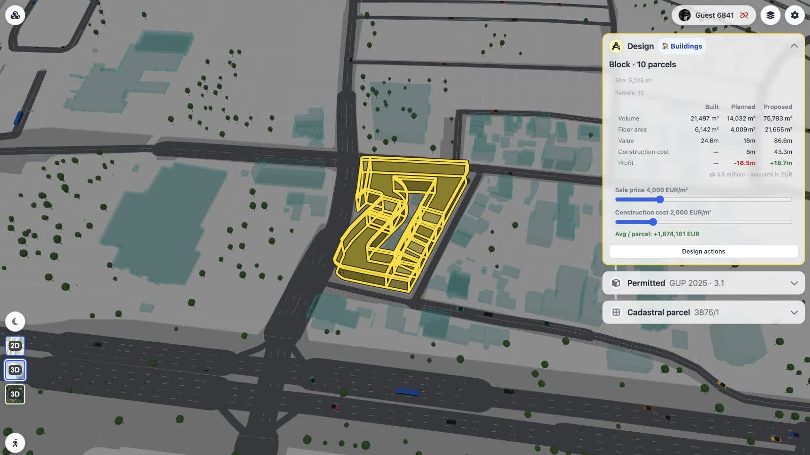
0:33Oblikujte blok
Podesite odmak, dubinu i visinu zgrade pa pregledajte volumen u 3D prikazu.
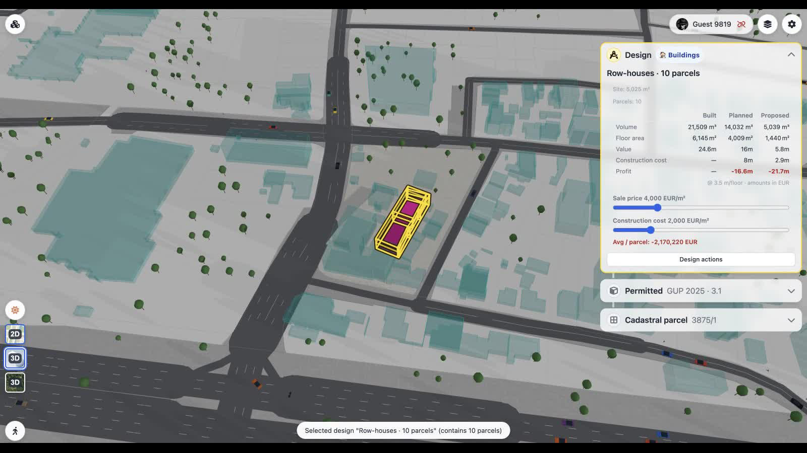
0:29Oblikujte niz kuća
Podesite dimenzije niza i pravilo visine, dovršite dizajn i pregledajte ga u 3D prikazu.
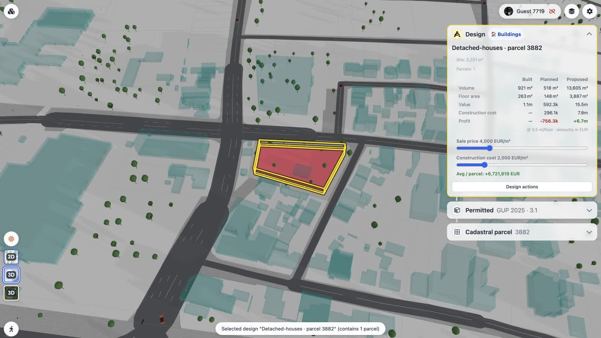
0:22Oblikujte samostojeće kuće
Odredite katnost, udaljenost od međa i veličinu čestica.
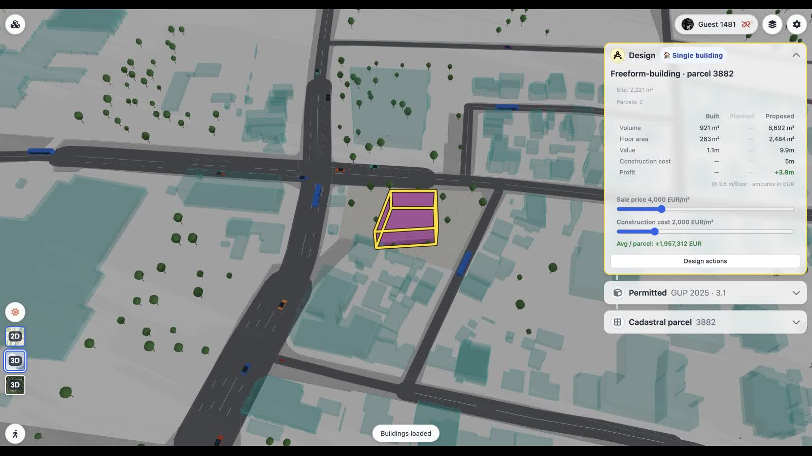
0:26Oblikujte zgradu slobodnog oblika
Povucite vrhove tlocrta, podesite visinu i pregledajte zgradu u okolini.
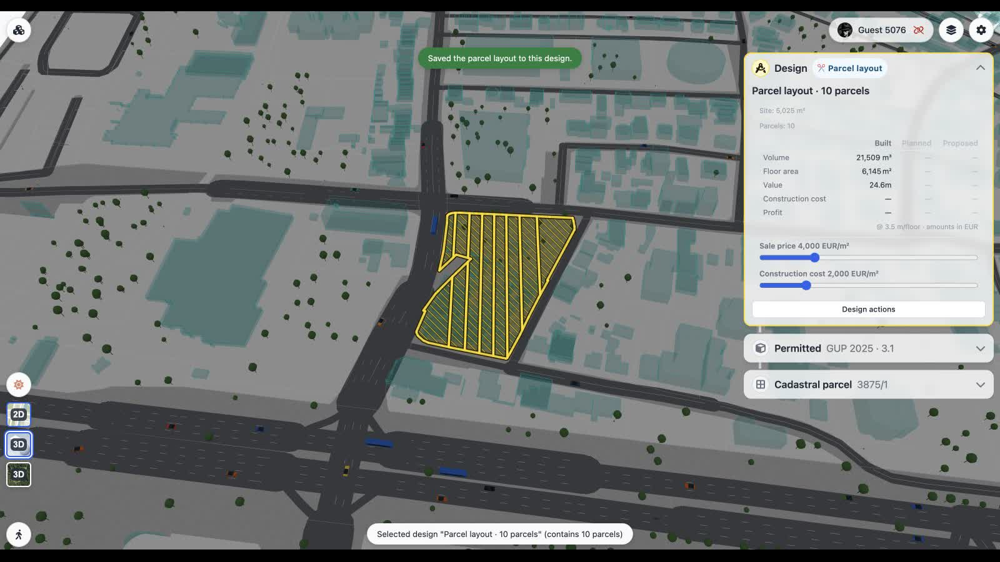
0:25Preoblikujte međe čestica
Odaberite Rasporedi čestice, uredite broj novih čestica i usporedite novi i stari raspored.
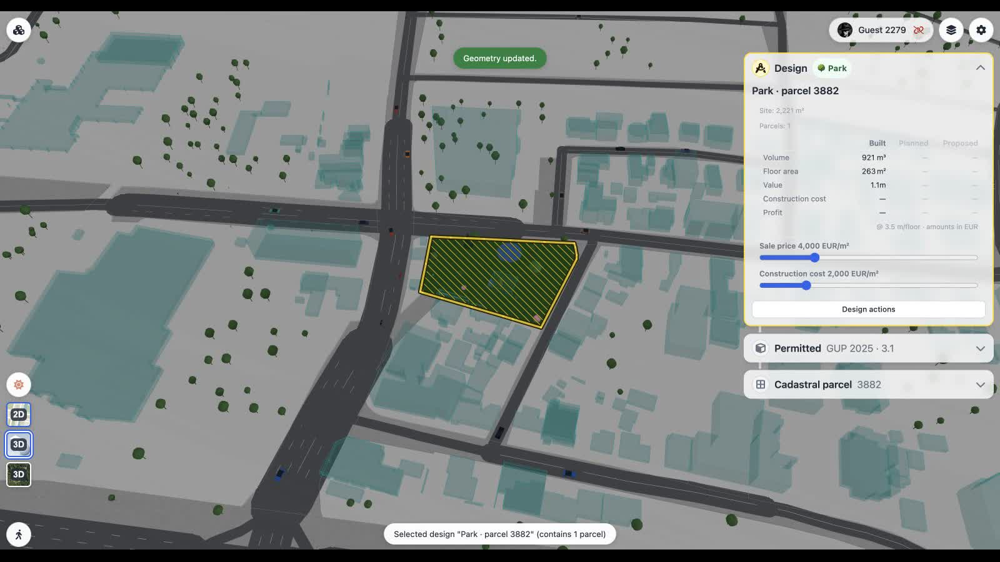
0:27Oblikujte park
Dodajte zelenilo, jezerca i staze, spremite oblikovanje i pregledajte ga u 3D prikazu.
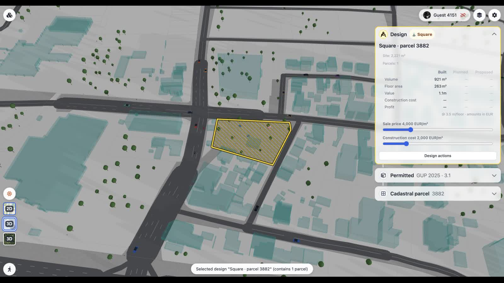
0:24Oblikujte trg
Rasporedite opremu na karti, spremite trg i pregledajte ga u 3D prikazu.
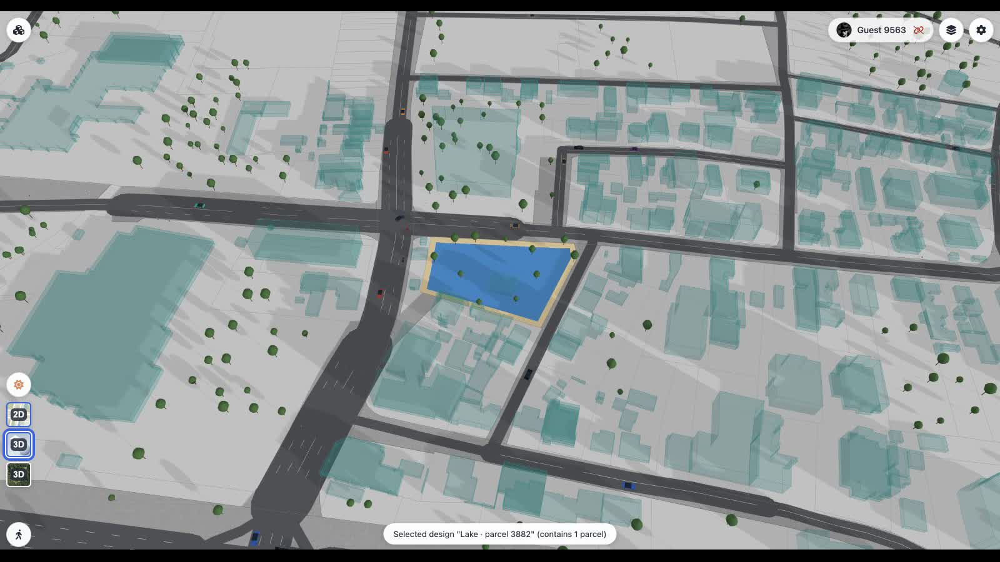
0:17Oblikujte jezero
Na odabranom zemljištu oblikujte vodenu površinu i pregledajte obalu u 3D prikazu.
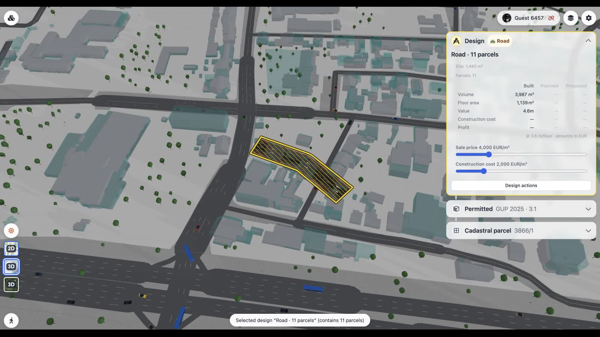
0:36Oblikujte ulicu
Složite prometni profil, nacrtajte trasu i pregledajte presijecanje zgrade i 3D prikaz.
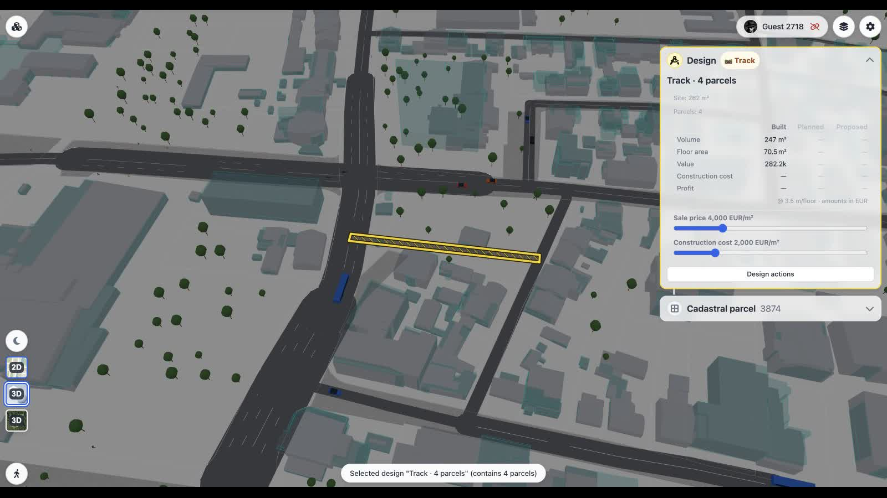
0:19Nacrtajte željezničku trasu
Odaberite projektnu brzinu, nacrtajte trasu i pregledajte kolosijek u 3D prikazu.
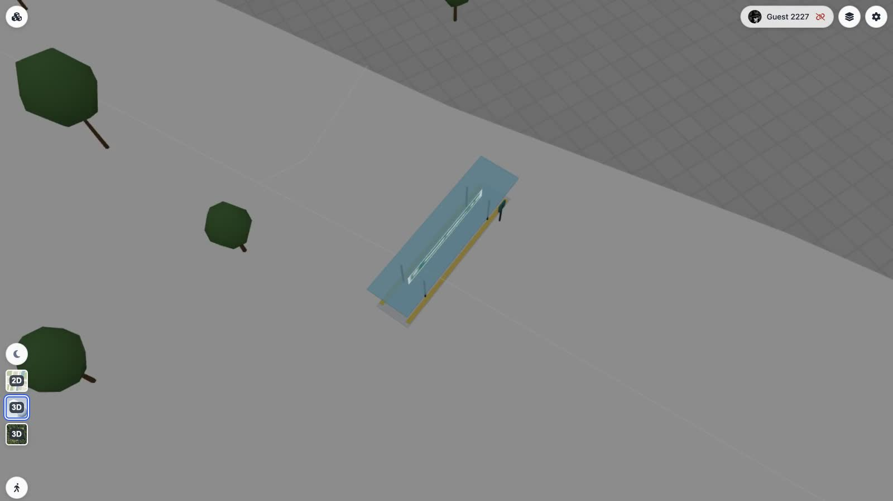
0:32Postavite stanicu
Poravnajte tramvajsko stajalište s kolosijekom, podesite položaj i pregledajte peron.
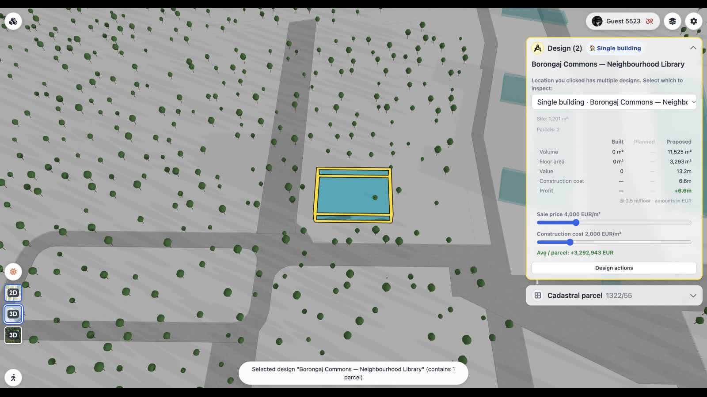
0:34Izradite lokalnu varijantu
Uredite objavljeni dizajn kao lokalnu varijantu, pregledajte zahvat zemljišta i provjerite rezultat u 3D prikazu.
Odaberi alat za promjenu
| Alat | Namjena | Upute |
|---|---|---|
| Slobodna zgrada | Nacrtaj i preoblikuj tlocrte. Postavi visinu i zeleni ili popločani okoliš. | Upute za kuću |
| Blok / Kuće u nizu / Samostojeće | Postavi građevno pravilo, granice i najmanju česticu. Pregledaj primjer gradnje. | Zgrade |
| Park / Trg / Jezero | Napravi javni prostor pa rasporedi opremu na karti. | Parkovi, trgovi i jezera |
| Reparcelacija | Podijeli automatski, nacrtaj slobodno ili zadrži postojeće čestice. Provjeri vlasnike i novac. | Reparcelacija |
| Cesta / Pruga | Nacrtaj koridor i složi njegov presjek od traka. | Ceste i pruge |
Pregledaj, doradi i gradi suglasnost
Klikni objekt za njegovu ploču radnji. Detalji dizajna sadrže dizajn, zemljište, vlasništvo i informacije o odobrenju. Makni s karte uklanja dizajn iz trenutačnog plana, ali zadržava njegov zapis.
Odaberi Uredi geometriju za izmjenu dizajna. Uređivanje objavljenog dizajna stvara lokalnu varijantu s poveznicom na izvor. Pregledaj geometriju i zahvat zemljišta prije spremanja i dijeljenja.
Izradi plan, podijeli dizajn i dogovori sporazum
Završi rad u alatu kako bi izradio lokalni dizajn i primijenio ga na kartu. Radnja Podijeli objavljuje i povezuje samo taj dizajn. Odaberi Dodaj u plan da ga uključiš u novi plan ili izradiš novu verziju spremljenog plana. Otvori Popisi, odaberi Planovi pa Izradi plan. Odaberi dizajne, odaberi Nastavi i zadaj naziv plana. Izrada plana sprema ga lokalno bez objave.
Otvori spremljeni plan i odaberi Podijeli plan da objaviš i kopiraš njegovu točnu snimku. Promjena naziva, dizajna ili prikaza sprema novu verziju; postojeće poveznice zadržavaju izvorni sadržaj. Za dogovor o zemljištu i novcu odaberi Izradi sporazum iz spremljenog plana. Pregledaj ulazne čestice, nastale dijelove, dodjele, novac i pravilo odlučivanja, a zatim odaberi Predloži da objaviš sporazum i kopiraš njegovu poveznicu. Vlasnici potpisuju odluke za taj sporazum; njegov sponzor može izdati obvezujuće pravilo vlasnika, a potvrditi ga može imenovani sloj. Glasovanje zajednice nije obvezujuće i broji se izvan lanca. Objavljivanje, odluka i izvršenje zasebni su koraci.
Usporedi varijante
Odaberi Prije / Poslije u detaljima dizajna ili dizajneru i povuci razdjelnik preko iste karte. Za usporedbu dizajna otvori Popisi, odaberi Dizajni , odaberi Usporedi projekte, označi barem dva dizajna i klikni Usporedi . Usporedba prikazuje zemljište, zgrade, čestice i druge dostupne podatke o dizajnima.
Podijeli dizajn ili plan
Podijeli u ploči objekta stvara poveznicu na jedan dizajn. Za dijeljenje plana otvori Popisi → Planovi, otvori spremljeni plan i odaberi Podijeli plan.
Plan se sprema lokalno, a objava stvara javnu poveznicu na njegovu točnu snimku. Aplikacija traži ime profila pri objavi novih zapisa.